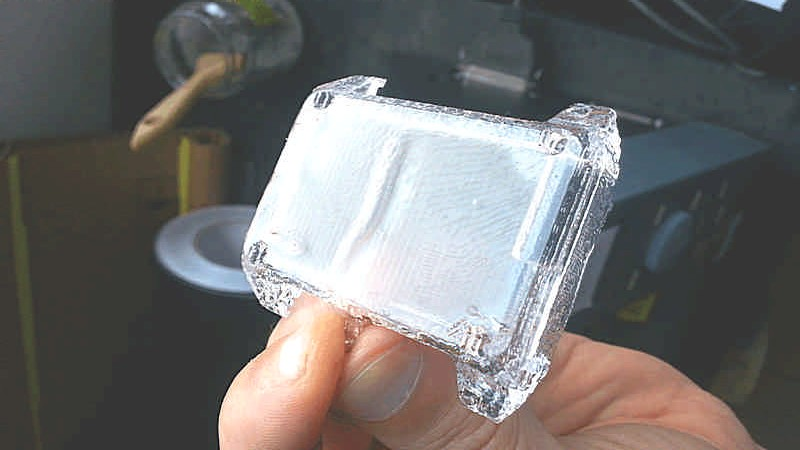
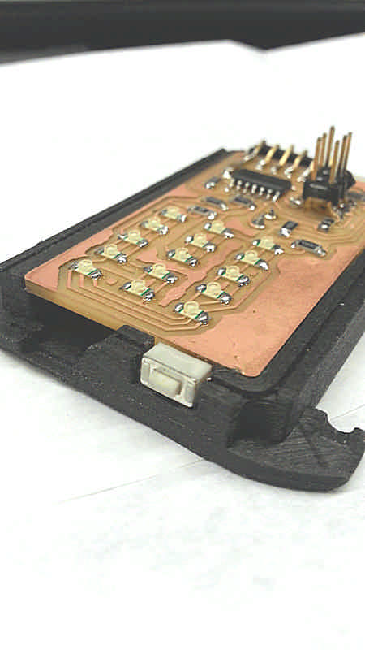

David Montenegro
FAB ACADEMY 2015
Final Project | Assignments | Download | About | Contact
Final project

A device to better manage our everyday time to help us to not overcommit our lives.
A simple way to visualize and manage time from a different point of view.
A non invasive but strongly communicative device to tink about time as a discrete resource instead of a continuous flow.
It count time as a percentage over an amount of time defined by the user instead of a delta between two moments. This way I can commit an amount of time to do something and monitor how much time left I have.
Thinking about our everyday life we can easily recognize three main classes of tasks: duties, leisure and needs. These three categories are bounded by the following equation:
Duties + Leisure < 24h - Needs
so each of them is a variable that everyone can set.
The residual amount for each variable is shown by three led bars, going always from 100% to 0% at different rates depending on the amount of time resource committed for each one.
Two buttons to press simultaneously allow to swap from a variable to another.
When the current variable reach the 0% automatically the other two will be decreased at half of each rate until you wont choose which one is currently running; when also the second variable has reached the 0% the remaining variable continue to decrease at it’s own rate.
What questions need to be answered?
Will it be a useful device?
Will help me to better organize my time?
How can it evolve?
What function can easily be integrated using the same hardware?
What functions can be integrated upgrading the hardware?
How can it be optimized?
Does people will build it? and why? or why not?
Who’s done what beforehand?
Everything starts from this an article I’ve read online some month ago. A Formula to Stop You from Overcommitting Your Time
This device will just show this simple principle overtime.
Online I’ve found different watches with fancy displays, but the most counts on hours and minutes base, just because they are watches, and they don’t need to be configured but just synchronized with the local area time.
The closer to my idea is the Kisai Denshoku led watch because of its japan style minimalism, but even with a fancy visualization it still counts time as usual.
Last example of minimal watches is the Nixie watch using a nixie tube
How will it be evaluated?
It has to meet 3/5 of these requirement:
Step1: the board (led matrix and buttons) works CHECKED
Step2: the code for the counters works CHECKED
Step3: the configuration via FTDI works UNCHECHED
Step4: the configuration interface works CHECKED
Step5: the parts of the case fits properly among them CHECKED
For this project the following processes will be used:
- Project planning
- Electronic design
- Elettronic production
- 3D design
- 3D milling
- Molding and casting
- Lasercutting
- Input and output
- Embeeded programming
- Interface design
Materials and components required
Electronics
Atmel ATtiny44
Quantity 1
Cost 1.05€
Led Blue Clear 1206
Quantity 15
Cost 0.45€
Resistor 0kOhm 1206
Quantity 1
Cost 0.004€
Resistor 10kOhm 1206
Quantity 1
Cost 0.05€
Resistor 499Ohm 1206
Quantity 5
Cost 0.03€
Capacitor 1uF 1206
Quantity 1
Cost 0.14€
FTDI pins
Quantity 1
Cost 0.14€
ISP pins
Quantity 1
Cost 1.86€
Enclosure
Frame
Quantity 20g
Cost 3€
Process Casting
Front
Quantity 5g
Cost 0.50€
Process 3D print
Project’s modules
Project planning
The whole project consist in several modules; every module may be made in one ore more process. I simply divided the processes by pertinence and developed one by one.
The schedule was not originally defined because at the first time the my final project was different and it has been discarded due to a too high complexity and too much cost.
Here the schedule
- Project planning 13.05.2015
- Electronic design 16.05.2015
- 3D design 18.05.2015
- Elettronic production 18.05.2015
- 3D milling 24.05.2015
- Lasercutting 24.05.2015
- Molding and casting 26.05.2015
- Input and output 01.06.2015
- Embeeded programming 02.06.2015
- Interface design 05.06.2015
More details can be found at Applications and Implications page
Board

First of all I started designing the board because it will define the minimum space needed for the components.
I started from a board made during the Output assignment and than I milled a more compact double layer board that measures 29.36x52.23x1.65 with 1mm round corners. At first attempt some traces where not well defined and the overall size of the battery case exceeded the edge of the board.


To avoid accidental pressures of the button I made an hardware double-button so the actual pressure is read just if both the physic buttons are pressed simultaneously.
On the back side there are two pads to power the board with external power source because the energy issue is one of the main field for further developments.


Download Board.7z
When I first mounted the FTDI slot it was parallel with the board, but goes outside the silhouette of the board so I decided to bend it, paying attention to not touch the traces nearby, and direct the slot the bottom of the frame.
Before to mount the buttons on the side of the board I manually removed the copper on the edge, otherwise the button would be constantly “pressed”.
Frame
The frame has to be sturdy, reliable, simple. This part can be made in two different ways and I tried both: 3D print and casting. Due to its small size also tolerance and precision can’t be left behind.
First I designed the shape with 3D software starting from the overall size of the board components.

On the right side it has a slot for the button, on the left side a slot for the button and a slot for a microUSB plug for further implementation of lipo battery and easier connections.


I made it first with 3D printer to verify shapes and dimensions and fix tolerances to fit properly; the first test has revealed some major mistake that doesn’t allow at all the fit of the two parts. After the first test I’ve loosened the fit by 0.2mm and continued with more test.
Upper shell
The upper shell has to be transparent, or in any case has to let the light pass through. For this reason I 3D printed this piece in Taulman T-glasse, the only material 3d-pintable that lets light pass trough itself.
Otherwise I can make a double mold to cast a see-through resin.
To do so I made master milled from wax.
The wax master needs much more attention because of the two shell and the long time needed to mill it. I first used a 3mm endmill to the rough finish and a 1.54 endmill for the fine finish.


For the top shell I used a polyester resin used for inclusion of small objects (Prochima Cristal); it’s mix a 2% of catalyst in weight, and due to the small amount of material needed is quite difficult to correctly measure the catalyst. For this reason I approximate in excess, reducing the pot life.
Mixing the resins is very important to do is as sowly as possible to avoid the inclusion of bubbles because we won’t have time for degas. This time is a trade off, because after mixing we have to pour it in a syringe while it’s still fluid enough to pass by a 2mm pipe.
The mold has several holes: the very tiny ones (less than 1mm) let the air flows outside from the wristband-holder while the other two, situated on the long side, lets the material came in and goes out to be sure all the spaces are filled.
Note that all the holes are drilled on the silicone, and not milled and taken by the mold.
Once cured I opened the mold and this was the result

As you can see my effort to obtain a sleek surface doesn’t receive a reward: on the surface there is a little bubble and seams that the flow of the resin itself has created a vacuum part in some way because there is an hollow right at the center, in front of the injection hole. By the way it’s a good starting point to for further attempt.
Lower shell
Making the mold for the lower shell has encountered a major trouble: at the first attempt I’ve got some trouble with the scale, so I don’t mixed the correct amount of parts. The result was that the silicone after 24hrs were still liquid, so I poured it into a jar to redo the mold and at the second attempt it has came out well.

Due to its shape the lower shell can be made in an open mold. Moreover the lower shell doesn’t need to be transparent and so I decided to use a metal filled resin, but first I made a simple test to verify how a steel thread works on resin and how large the hole has to be. For an M3 screw a 2.4mm holes works well but a little bit tight while a 2.8mm holes can be threaded anyway, but it works smoother. I simply don’t know on the long run what’s the best but to avoid to overstress the resin matrix I’ll go with a 2.8mm and if the screw will loosen I’l put some teflon.
To mix filled resins it’s recommended to weigh the part A, than add the filler and than complete adding the part B to start the chemical reaction. If you want you can even control the weight of the object because the metal filler is far more heavy than resin (from about 5 to about 7 times).


The result just is a smooth matte surface; it has to be polished with a metal sponge to let the metal grains “raise” showing a metal like surface. It’s mechanical properties are provided by the resin (as a matter of fact has a low Young module).
After the curing the resin has a slight shrinkage so the tight fitting with the board is not guaranteed any more; I removed about 1mm using a Dremel and engraved also a litle bite for the battery because I always tried the fitting without it.
I also produced 3d-printed version of the lower shell to compare the results. It has been made with different materials: with bronze filled PLA for a metallic warm finish and a good weight-feel, and carbon filled PLA for a light and strong structure in addition to simple PLA for test. It has no shrinkage and for few takes less than 1hr to be printed (1 piece).

Download
Case
Add link to download files HERE: upper_shell, lower_shell, uppershell_mold_up, uppershell_mold_down, lowershell_mold
Watchstrap
It has been realized in one piece of leather 1,5mm tick. The idea is very simple: avoid to use glue or sawing machine.
The design is very bold because of the size of the case, but it may shrink accordingly with the next versions of the case. anyway, to maintain that constrains it can’t be shrunk behind some physical limit: every fold takes some millimeter and to make the hinge it needs some space so I wouldn’t make a more narrow watchstrap without reducing also the thickness of the lather.
Here you can see how it has changed after the first cut.
For a better output the logo has been converted in a single line instead of an outline version due to its tiny size.
But the most important change is the length of the arms (increased because the fold needs some millimeter) the distance between the horizontal fold and the two main cuts (in the first model there was not enough space to let the metal bar pass under the fold) and the regulation cuts (larger and wider to allow a more comfortable wearing).

On both ends (clasp and case) the watchstrap holds quite well.
Download
Watchstrap
Code
Note
To favor the reading I’ll keep all the code on the downloadable file and occasionally I’ll quote some part. I prefer to explain how it works instead of show all the code on the page.
The functioning of the device is quite simple: there are 3 values expressed in hours that can be customized; their sum is 24 (controlled by a simple script and I’ll assume that they are all equal to 8 hours). Three timers to count the values that runs one by one to measure the time as a resource that runs out instead of a quantity in constant increase. Every value can be assigned to a set of programmed tasks (like work, leisure and needs). Every time we switch from one set to another we switch the counter too, so a different counter can start working. A 5x3 led matrix visualizes on the rows the three values expressed in percentage. The accuracy is 20% because of the number of leds; I’m not sure that using a more accurate output that can express more accurate values (e.i. a liquid crystal display or an oled display) improve accuracy would be meaningful: we actually don’t read the value as a number but as a visual information, so the resolution is not so crucial.
When a counter is working it’s showed so we can check the remaining time like a normal watch.
The coding has been tough for me and develop the device with this basic set of functions is a challenging goal for me. Nonetheless I’d like to update it with other functions, to recognize who is wearing the device via biometric sensors, or visualize more information with the same essential hardware, or gather them and send to a database to analyze and visualize overtime.
To do so I setted two internal timers: timer 0 at 8bit to manage the refresh frequency of the led matrix and timer1 at 16 bit to count time. Actually there is just one counter and the values of the main three counters are stored in global variables. In order to reduce the speed I set up a 1024 prescaler and a clock speed (from the fuses 0x5E) of 1MHz, so with this settings 1 second is 976,5625 clock’s cycles, so I can use shorter variables to store the time.
// clock timer
TCCR1B |= ( 1<<WGM12); //CTC mode // TCCR1B |= ( (1<<CS10) | (1 << CS12) ); //1024 prescaler
TCCR1B |= ( (1<<CS10) );
TIMSK1 |= (1<< OCIE1A);
// display frequency timer
TCCR0B |= ( 1<<WGM02); //overflow mode
TCCR0B |= ( (1<<CS00) ); // No prescaler
TIMSK0 |= (1<< OCIE0A);
sei();
OCR1A = 976; //clock cycles per second (1MHz / 1024 prescaler)
OCR0A = 100; // Update frequency of display: 1Mhz / 100 = 10kHz
This code goes into the main, just before the while(1).
The function while(1) just cycles the icounter variable that defines which counter is currently working and so from which variable subtract time. The cycling is triggered pressing the double button connected on the PB7.
The subtraction operation is made inside an interrupt routine that is triggered every time a second elapses.
ISR(TIM1_COMPA_vect) {
if ( timeResid[icounter] != 0 ) { // if the counter still has credits
timeResid[icounter] -= 2; // so subtract two
}
The time is counted in double units so to subtract 1 second from the timeResid variable (the variable that stores the residual amount of time for the specific counter) it subtracts 2 units; if one counter value runs to 0 the routine subtract 1 unit from the remaining two counters, so 1 second has been subtracted anyway.
else {
// but if the time of the active counter has ran out
// subtract 1 credit to the other counters
// and if also an unactive counter has ran out of time
// subtract 2 credits to the last standing counter
if (icounter == 0 ) {
if (timeResid[1] > 0 && timeResid[2] > 0) {
timeResid[1] --;
timeResid[2] --;
} else if (timeResid[2] > 0) {
timeResid[1] -= 2;
} else if ( timeResid[1] > 0) {
timeResid[2] -= 2;
}
}
if (icounter == 1 ) {
if (timeResid[0] > 0 && timeResid[2] > 0) {
timeResid[0] --;
timeResid[2] --;
} else if (timeResid[0] > 0) {
timeResid[0] -= 2;
} else if ( timeResid[1] > 0) {
timeResid[2] -= 2;
}
}
if (icounter == 2 ) {
if (timeResid[0] > 0 && timeResid[2] > 0) {
timeResid[0] --;
timeResid[2] --;
} else if (timeResid[0] > 0) {
timeResid[0] -= 2;
} else if ( timeResid[1] > 0) {
timeResid[2] -= 2;
}
}
}
When remain just one counter with positive value it obviously subtract 2 units from them and when also the last timer has run out of time it means that 24hrs are elapsed so it sets all the timeResid to max to start over.
if (timeResid[0] == 0 && timeResid[1] == 0 && timeResid[2] == 0) {
timeResid[0] = timeResid[1] = timeResid[2] = 57600;
}
The led matrix is driven with a charlieplexing, so it means that I can turn on just one led at time, so cycling them and using the persistence of vision I can apparently turn on several leds at time.
To turn on just one led I need to set the two pins reltive to the led’s anode and cathode as OUT (3Vout and Ground) and all the others as IN in order to stay floating (an indefinite status).
So the first thing to do is to organize the led in an ordered structure, like a 2 dimention array, to retrive a single led using rows and columns as cartesian coordinates.
int led[15][2]={
{0,1},
{1,0},
{0,2},
{2,0},
{0,3},
{3,0},
{0,4},
{4,0},
{1,2},
{2,1},
{1,3},
{3,1},
{1,4},
{4,1},
{2,3}
};
Now I can clear all the pins
// set all the pin as INPUT
void clearAll(){
*ledDir(ledPin(A)) &= (~ledPin(A)) ; // set as INPUT the pin 'A'
*ledDir(ledPin(B)) &= (~ledPin(B)) ; // set as INPUT the pin 'B'
*ledDir(ledPin(C)) &= (~ledPin(C)) ; // set as INPUT the pin 'C'
*ledDir(ledPin(D)) &= (~ledPin(D)) ; // set as INPUT the pin 'D'
*ledDir(ledPin(E)) &= (~ledPin(E)) ; // set as INPUT the pin 'E'
}
than I set THE led that has to turn on using the index of the leds array to refer to it.
//function to turn on a led using it's index void setTheLed(unsigned short int ledNumber) {
clearAll();
unsigned short int from = ledPin(led[ledNumber][0]);
unsigned short int to = ledPin(led[ledNumber][1]);
*ledPort(from) |= from; //set the pin as HIGH
*ledPort(to) &= (~to); //set the pin as LOW
*ledDir(from) |= from; //set the port direction as OUT
*ledDir(to) |= to; //set the port direction as OUT
}
Now the main() and the while(1) functions can run; they simply look at the PA7pin for the button and change the value of the icounter variable; in the meanwhile every second an interrupt is triggered and 1 second subtracted from the timeResid[icounter] and a series of leds shows this info blinking as fast that they seems steady.
Download
LifeTime_v.4
Web Application
I started from this tutorial http://fabacademy.org/archives/2015/doc/networking-esp8266.html
It’s a linear system that uses a HTML webpage using Javascript tu manipulate data. It’s based on Python and it needs these packages: PySerial, Multiprocessing and Tornado Webserver.

I’ve taken just the output part of the webpage to provide three values to three constant, these three values are bounded by a mathematical equation
> A + B = 86400 - C
where 8640 is the amount of seconds per day.
This bound is defined in the javascript file with the following lines
var duty_val = 8;
var leisure_val = 8;
var needs_val = 8;
//duty_val + leisure_val == 24 - needs_val;
$("#duty_val").change(function(){
var val = $('#duty_val').val();
var diff = val - duty_val;
duty_val = val;
leisure_val = leisure_val - (diff/2);
$("#leisure_val").val(leisure_val);
needs_val = needs_val - (diff/2);
$("#needs_val").val(needs_val);
});
$("#leisure_val").change(function(){
var val = $('#leisure_val').val();
var diff = val - leisure_val;
leisure_val = val;
duty_val = duty_val - (diff/2);
$("#duty_val").val(duty_val);
needs_val = needs_val - (diff/2);
$("#needs_val").val(needs_val);
});
$("#needs_val").change(function(){
var val = $('#needs_val').val();
var diff = val - needs_val;
needs_val = val;
duty_val = duty_val - (diff/2);
$("#duty_val").val(duty_val);
leisure_val = leisure_val - (diff/2);
$("#leisure_val").val(leisure_val);
});
In the HTML file I removed the input field and added tree number input. Because of the javascript they starts always with a 8 (hours) by default. I added some line of text and a background PNG too.
Index.html <!DOCTYPE HTML> <html> <head>
<script src="https://ajax.googleapis.com/ajax/libs/jquery/1.11.3/jquery.min.js"></script>
<script type="text/javascript" src="static/main.js"></script>
</head>
<body>
<h1>Set your time</h1>
<h3>and remember that you have just 24hrs!</h3>
<br>
<p>DUTY</p>
<form id="duty">
<input type="number" id="duty_val" value=8>
//SLIDER
<script>
//function myFunction() {
// var x = document.createElement("INPUT");
// x.setAttribute("type", "range");
// document.body.appendChild(x);
//}
</script>
</form>
<p>LEISURE</p>
<form id="leisure">
<input type="number" id="leisure_val" value=8>
</form>
<p>NEEDS</p>
<form id="needs">
<input type="number" id="needs_val" value=8>
</form>
<br>
<button id="cmd_send">Send</button>
</body>
</html>
main.js
<!DOCTYPE HTML>
<html>
<head>
<script src="https://ajax.googleapis.com/ajax/libs/jquery/1.11.3/jquery.min.js"></script>
<script type="text/javascript" src="static/main.js"></script>
</head>
<body>
<h1>Set your time</h1>
<h3>and remember that you have just 24hrs!</h3>
<br>
<p>DUTY</p>
<form id="duty">
<input type="number" id="duty_val" value=8>
//SLIDER
<script>
//function myFunction() {
// var x = document.createElement("INPUT");
// x.setAttribute("type", "range");
// document.body.appendChild(x);
//}
</script>
</form>
<p>LEISURE</p>
<form id="leisure">
<input type="number" id="leisure_val" value=8>
</form>
<p>NEEDS</p>
<form id="needs">
<input type="number" id="needs_val" value=8>
</form>
<br>
<button id="cmd_send">Send</button>
</body>
</html>
Download Lifetime application